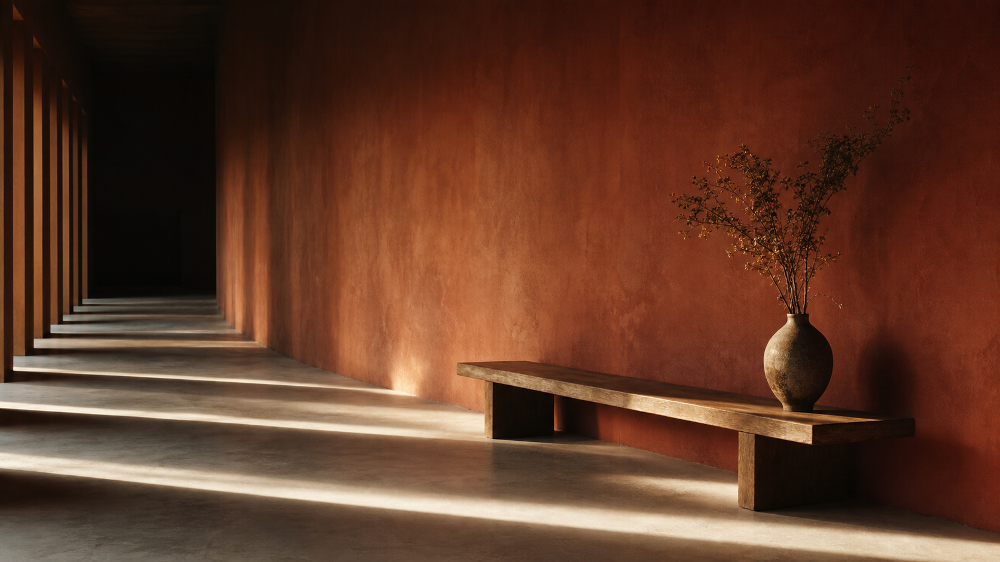
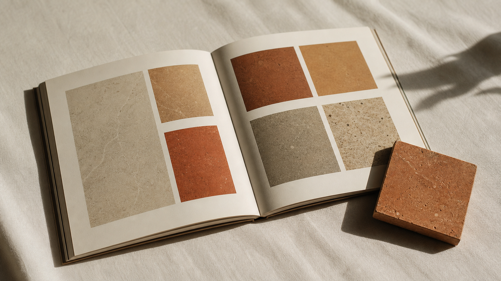

Selected work
Eleven commissions, one long wall.
Every project here is one slow measurement, taken against the same wall across a single season. The studio is the sum of those measurements.

Index of work
The full index.
The complete record of commissions. Follow any line into its full plate.
-
01 Houl field guide, vol. ii mmxxiv
-
02 A second light for La Caleta mmxxv
-
03 Marvell Stone, second printing mmxxv
-
04 An almanac for slow buildings mmxxv
-
05 Solar calendar, issue iii mmxxv
-
06 Terracotta, by the metre mmxxv
-
07 The long room at Casa Namma mmxxv
-
08 A short almanac for the equinox mmxxvi
-
09 Silent House, letterforms mmxxvi
-
10 The dusk wall, printed mmxxvi
-
11 The hour the sun leaves the terracotta wall mmxxvi

Eleven projects, one wall to walk along. Each commission is one slow measurement, and the discipline of the studio is to stop at the next solstice.
© Riwaq, mmxxvi
Marrakech, Médina
Set in Cormorant Garamond & Inter Tight